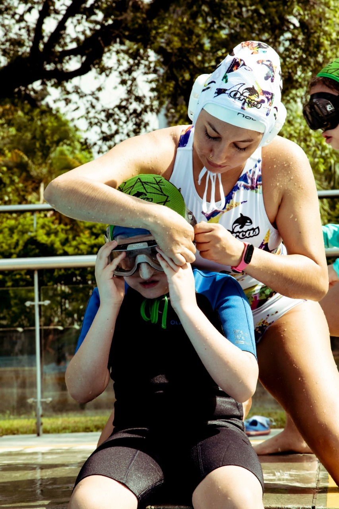
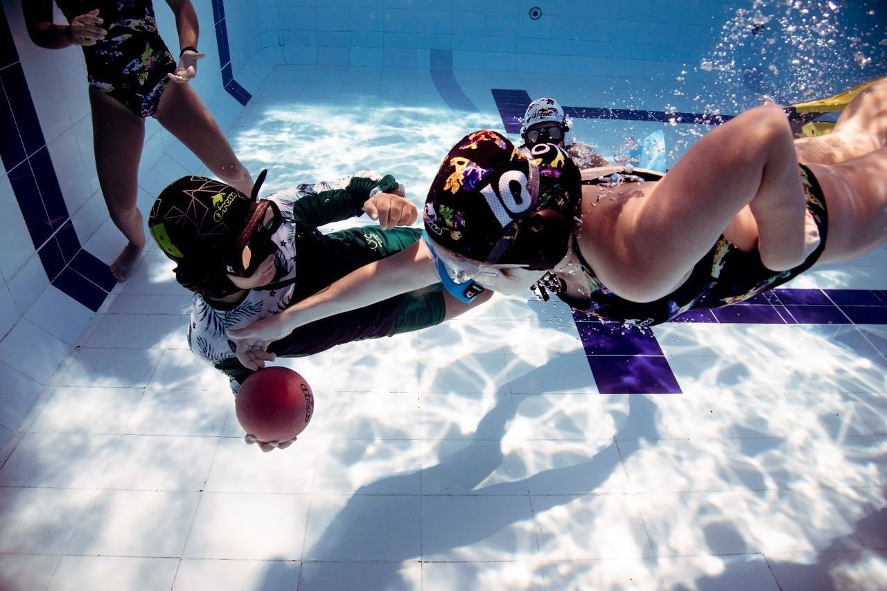
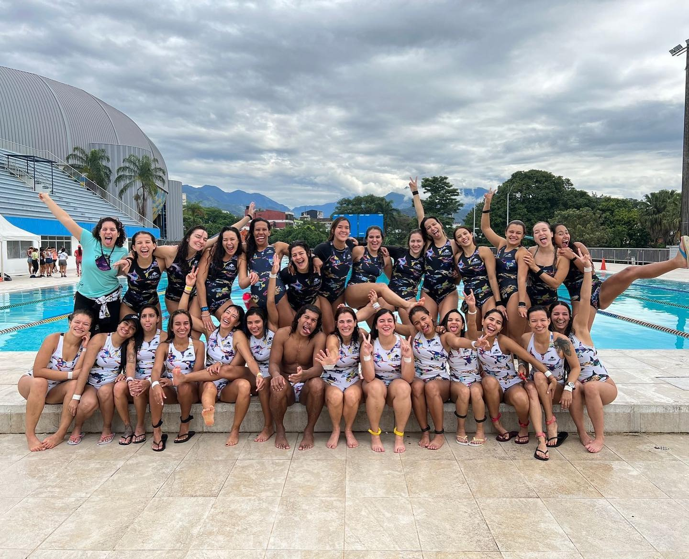
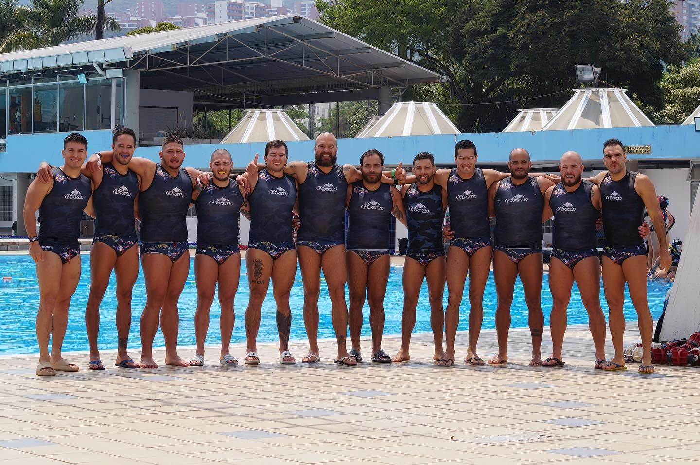

El club Orcas de Rugby subacuático es actualmente el club más grade a nivel nacional y mundial. Está conformado por aproximadamente 100 deportistas de diversas edades. Internamente el club está dividido en tres categorías:
-
Semilleros: grupo mixto de iniciación. Con
integrantes de los 6 años en adelante. Participan en los
campeonatos interclubes de la categoría de “Ascenso”, categoría
“semillero” .No hacen parte de los deportistas activos del club
ya que muchos de ellos no continúan el proceso formativo del
club.
 
-
Chapolas: ramas masculina y femenina, con
integrantes entre los 15 y 40 años. Deportistas en formación,
con nivel intermedio de juego y que participan en los
campeonatos interclubes de la categoría de “Ascenso”.


-
Elite: ramas masculina y femenina. Con integrantes
entre los 15 y 40 años. Deportistas con nivel avanzado de juego
y que participan en los campeonatos interclubes de la categoría
“Elite”.

Orcas, más que un club deportivo, es un club de amigos, donde sus integrantes encuentran un espacio para hacer deporte, para conformar su círculo de amistad, para aprender no sólo lo deportivo sino también en temas de vida. El objeto social del club es la promoción de la práctica deportiva y la estimulación de hábitos saludables en los habitantes del valle de aburrá.
Nuestra impronta
El Club Orcas será en el 2025, el Club Deportivo de Rugby Subacuático con mayor reconocimiento a nivel mundial por sus logros deportivos y por su compromiso con la formación integral de personas que respondan a los retos deportivos y personales con el objetivo de promover un estilo de vida saludable.
VisiónSer la mejor alternativa para la práctica competitiva y recreativa de Rugby subacuático. Formar deportistas de Rugby Subacuático con excelente fundamentación técnica y táctica, promoviendo el respeto, la tolerancia y el trabajo en equipo
ValoresRespeto Tolerancia Trabajo en equipo Estilo de vida saludable